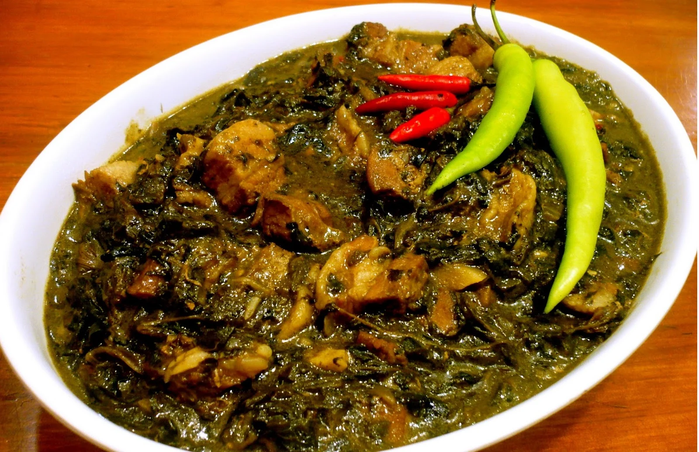

Laing Recipe

Ingredients:
- 2 cups dried taro leaves
- 1/2 lb pork, sliced
- 2 cups coconut milk
- 1 cup coconut cream
- 3 cloves garlic, minced
- 1 small onion, chopped
- 1 thumb-sized ginger, sliced
- 2 tbsp shrimp paste (bagoong)
- 5-6 pieces red chili peppers, sliced
- Salt and pepper to taste
Instructions:
- In a pot, sauté garlic, onion, and ginger until fragrant.
- Add the pork and cook until slightly browned.
- Pour in the coconut milk and bring to a gentle simmer.
- Stir in the shrimp paste and chili peppers.
- Gently add the dried taro leaves, making sure not to stir too much.
- Let it simmer until the taro leaves are tender and fully absorb the flavors.
- Pour in the coconut cream and continue cooking until the sauce thickens.
- Season with salt and pepper to taste.
- Serve hot with rice. Enjoy!
Back to Menu